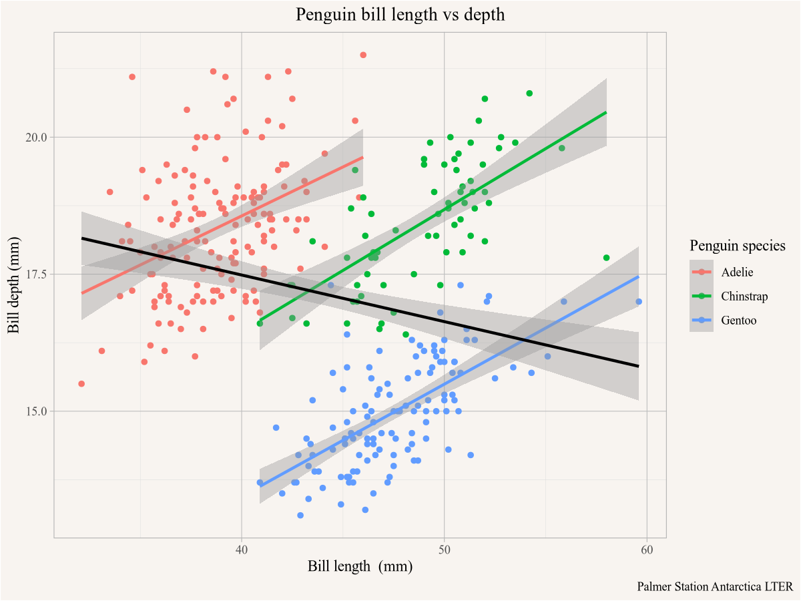
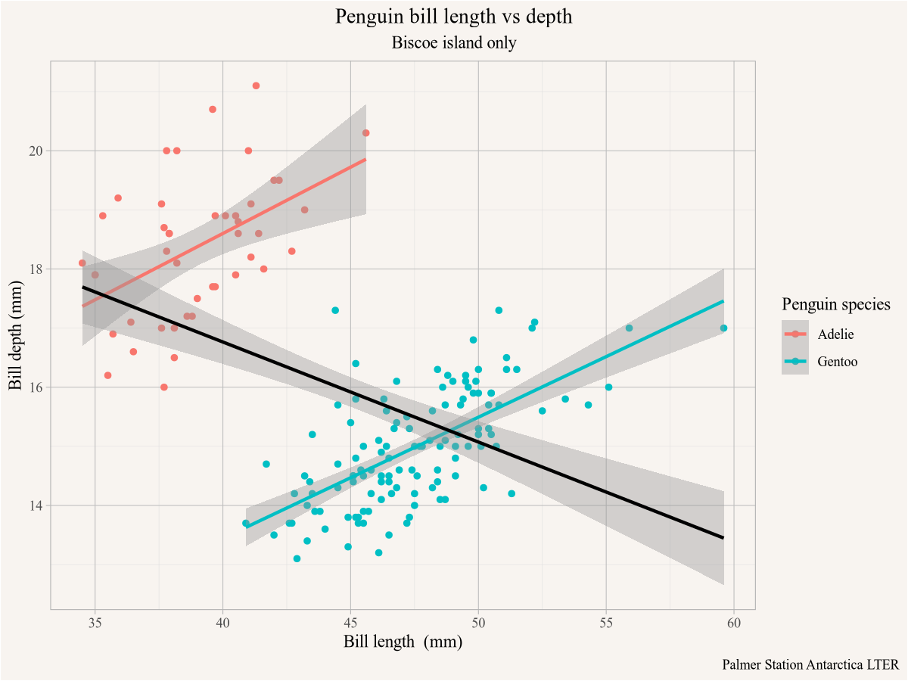

Code
install.packages("tidyverse")Statistics Canada produces a lot of high quality demographic and economic data for Canada. CMHC complements this with housing data, and municipalities across Canada often provide relevant data through their Open Data portals.
We will be working in R and the RStudio IDE, although using a different editor like Visual Studio Code works just as well, especially if you are already familiar with it. Within R we will be operating within the tidyverse framework, a group of R packages that work well together and allow for intuitive operations on data via pipes.
While an introduction to R is part of the goal of this book, an we will slowly build up skills as we go, we not give a systematic introduction but rather build up skills slowly as we work on concrete examples. It may be beneficial to supplement this with a more principled introduction to R and the tidyverse.
Packages are bundled sets of functionality that expand base R. We install or upgrade packages with the install.packages`. For example, to install the tidyverse framework we type
install.packages("tidyverse")into the R console. This will install or upgrade the package and required dependencies. To make the functionality, for example the tibble function from the tibble package that is part of tidyverse, available to use we can then either access functions from the package using the :: namespace selector tibble::tibble() or first load the tibble or tidyverse package via library(tidyverse) that makes the tibble() function available without having to use the namespace selector.
Additionally, we will need a number of packages that handle data acquisition and processing for Canadian data.
install.packages(c("cancensus","cansim","cmhc","tongfen"))There are several basic data manipulation patterns that we will use throughout, and we want to give a quick overview using the Palmer Penguins dataset from the palmerpenguins package.
install.packages("palmerpenguins") # install the package if neededWe will at times require additional packages like this to accomplish specialized tasks, installing packages in R is generally a simple and pain-free procedure.
# install.packages("palmerpenguins") # install the package if needed
library(palmerpenguins)Now we have all the functionality of the palmerpenguins package available.
With the palmerpenguins package comes the penguins dataset, we can expect the first few rows using the head() function which displays the first few rows.
head(penguins)# A tibble: 6 × 8
species island bill_length_mm bill_depth_mm flipper_l…¹ body_…² sex year
<fct> <fct> <dbl> <dbl> <int> <int> <fct> <int>
1 Adelie Torgersen 39.1 18.7 181 3750 male 2007
2 Adelie Torgersen 39.5 17.4 186 3800 fema… 2007
3 Adelie Torgersen 40.3 18 195 3250 fema… 2007
4 Adelie Torgersen NA NA NA NA <NA> 2007
5 Adelie Torgersen 36.7 19.3 193 3450 fema… 2007
6 Adelie Torgersen 39.3 20.6 190 3650 male 2007
# … with abbreviated variable names ¹flipper_length_mm, ²body_mass_gThe str() function offers another convenient way to get an overview over the data.
str(penguins)tibble [344 × 8] (S3: tbl_df/tbl/data.frame)
$ species : Factor w/ 3 levels "Adelie","Chinstrap",..: 1 1 1 1 1 1 1 1 1 1 ...
$ island : Factor w/ 3 levels "Biscoe","Dream",..: 3 3 3 3 3 3 3 3 3 3 ...
$ bill_length_mm : num [1:344] 39.1 39.5 40.3 NA 36.7 39.3 38.9 39.2 34.1 42 ...
$ bill_depth_mm : num [1:344] 18.7 17.4 18 NA 19.3 20.6 17.8 19.6 18.1 20.2 ...
$ flipper_length_mm: int [1:344] 181 186 195 NA 193 190 181 195 193 190 ...
$ body_mass_g : int [1:344] 3750 3800 3250 NA 3450 3650 3625 4675 3475 4250 ...
$ sex : Factor w/ 2 levels "female","male": 2 1 1 NA 1 2 1 2 NA NA ...
$ year : int [1:344] 2007 2007 2007 2007 2007 2007 2007 2007 2007 2007 ...We can also type View(penguins) into the console to view the dataset in a spreadsheet form.
To manipulate and visualize the data we load the tidyverse package.
We will explore some common data manipulation and visualization workflows.
To see how many rows there are for each species we ‘pipe’ the penguins dataset into the count() verb. Pipes are how we can stepwise transform data, the pipe operator is given by %>% within the tidyverse framework and now also available natively in base R via |>. These two function (almost) the same way, and we will use both in this book.
penguins |> count(species)# A tibble: 3 × 2
species n
<fct> <int>
1 Adelie 152
2 Chinstrap 68
3 Gentoo 124This gives us the count of each species in the dataset, the pipe |> inserts the left hand side as the first argument in the count() function. We could have equivalently written this without the pipe operator as count(penguins,species).
The usefulness of the pipe operator becomes clear when we chain several data transformations. If we want to know the mean bill length by species, we group by species and summarize the data.
# A tibble: 3 × 2
species bill_length_mm
<fct> <dbl>
1 Adelie 38.8
2 Chinstrap 48.8
3 Gentoo 47.5Here we explicitly specify how missing values should be treated when summarizing, na.rm=TRUE says that NA values should be ignored when computing the mean.
We can visualize the data using ggplot. For this we have to specify the mapping aesthetics, we plot the bill length on the x-axis, the depth on the y-axis, colour by species and plot the data as points. The labs() function allows us to customize the graph labels.
ggplot(penguins,aes(x=bill_length_mm,y=bill_depth_mm,colour=species)) +
geom_point() +
labs(title="Penguin bill length vs depth",
x="Bill length (mm)",y="Bill depth (mm)",
colour="Penguin species",
caption="Palmer Station Antarctica LTER")
As an aside we note the Simpson’s paradox, in the overall dataset the bill depth declines with length, but if we look separately within each species the bill depth increases with bill length. To make that explicit we can add regression lines using the geom_smooth function using lm (linear model) as the smoothing method.
ggplot(penguins,aes(x=bill_length_mm,y=bill_depth_mm,colour=species)) +
geom_point() +
geom_smooth(method="lm") +
geom_smooth(method="lm", colour="black") +
labs(title="Penguin bill length vs depth",
x="Bill length (mm)",y="Bill depth (mm)",
colour="Penguin species",
caption="Palmer Station Antarctica LTER")
The first geom_smooth() function will add a regression line for each species, distinguished by colour in the plot aesthetics. Overriding the colour argument in the second geom_smooth() function will forget that the data was coloured by species and add the black regression line run on the entire dataset.
There are several common data manipulation steps that we will employ frequently.
Often we are only interested in subsets of the data, we can filter the rows in the dataset by using the filter verb from the dplyr package that is part of tidyverse. For example, if we want to take the previous plot but only show it for penguins on the island of Biscoe we can filter the data accordingly before plotting it.
penguins |>
filter(island=="Biscoe") |>
ggplot(aes(x=bill_length_mm,y=bill_depth_mm,colour=species)) +
geom_point() +
geom_smooth(method="lm") +
geom_smooth(method="lm", colour="black") +
labs(title="Penguin bill length vs depth",
subtitle="Biscoe island only",
x="Bill length (mm)",y="Bill depth (mm)",
colour="Penguin species",
caption="Palmer Station Antarctica LTER")
Instead of filtering rows it can be useful to select a subset of the columns to remove columns we don’t need and de-clutter the dataset. This is especially useful when producing tables. If we want a table of the numeric data fields of all female Adelie penguins on the island of Biscoe observed in 2007 we can filter by sex and island and select the columns we want.
# A tibble: 5 × 4
bill_length_mm bill_depth_mm flipper_length_mm body_mass_g
<dbl> <dbl> <int> <int>
1 37.8 18.3 174 3400
2 35.9 19.2 189 3800
3 35.3 18.9 187 3800
4 40.5 17.9 187 3200
5 37.9 18.6 172 3150We often want to change data fields, or compute new columns from existing ones. For example, if we want to convert the body mass from g to kg we can add a new column using mutate for that.
# A tibble: 5 × 4
bill_length_mm bill_depth_mm flipper_length_mm body_mass_kg
<dbl> <dbl> <int> <dbl>
1 37.8 18.3 174 3.4
2 35.9 19.2 189 3.8
3 35.3 18.9 187 3.8
4 40.5 17.9 187 3.2
5 37.9 18.6 172 3.15The data in our penguin_selection dataset above is in wide form, all the different variables are in their own column. Often it is useful to convert it to long form, where we only have one value column with the numeric values and another column specifying the type of measurement. In this case it is useful to add an identification column so that we know which measurements belong to the same penguin. We can just label the penguins by row number.
penguin_selection_long <- penguin_selection |>
mutate(ID=row_number()) |>
pivot_longer(-ID,names_to="Metric",values_to="Value")
penguin_selection_long |> head()# A tibble: 6 × 3
ID Metric Value
<int> <chr> <dbl>
1 1 bill_length_mm 37.8
2 1 bill_depth_mm 18.3
3 1 flipper_length_mm 174
4 1 body_mass_kg 3.4
5 2 bill_length_mm 35.9
6 2 bill_depth_mm 19.2We can do the reverse transformation, going from long form to wide form, using pivot_wider.
penguin_selection_long |>
pivot_wider(names_from = Metric,values_from = Value)# A tibble: 5 × 5
ID bill_length_mm bill_depth_mm flipper_length_mm body_mass_kg
<int> <dbl> <dbl> <dbl> <dbl>
1 1 37.8 18.3 174 3.4
2 2 35.9 19.2 189 3.8
3 3 35.3 18.9 187 3.8
4 4 40.5 17.9 187 3.2
5 5 37.9 18.6 172 3.15This recovers the previous form of the data, with the added ID column.
During the course of this book we will make heavy use of several R packages to facilitate data access to Canadian data, we will introduce them in this chapter.